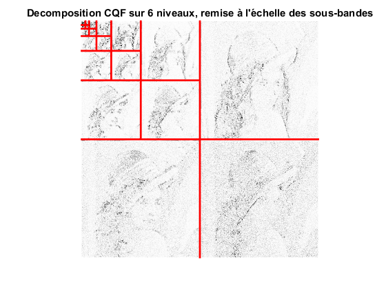
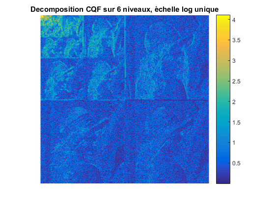
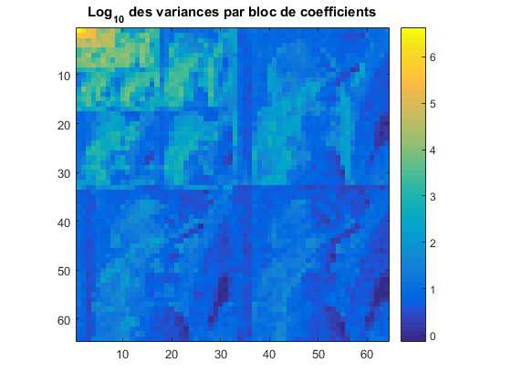
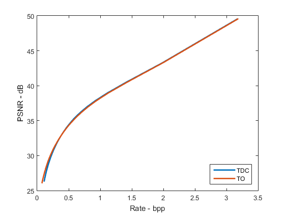
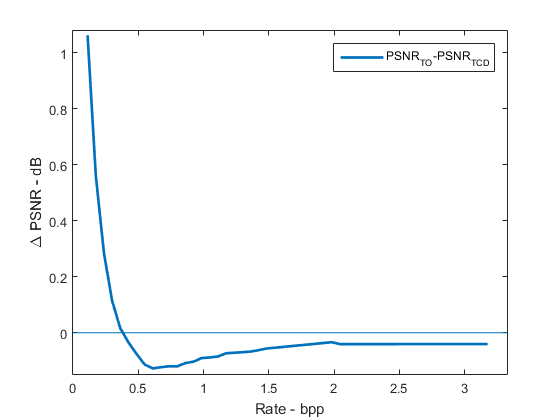

Contents
TP compression d'image
close all; clear
Charger une image
x= double(imread('lena.pgm')); bpp = 8; % Nombre de bits per pixel de l'image originale dyn = 2^bpp; % Dynamique de l'image originale
Calcul TO orthogonale, 4 moments nuls (MN), affichage
% Création du filtre. Le deuxième paramètre est deux fois le nombre de MN qmf = MakeONFilter('Daubechies', 16); % Calcul de la transformée en ondelette discrete (périodisation) nDecLev = 6; imSizeLog = log2(size(x,1)); X_TO = FWT2_PO(x,imSizeLog-nDecLev,qmf); % Affichage wt_view(X_TO, nDecLev); title(sprintf('Decomposition CQF sur %d niveaux, remise à l''échelle des sous-bandes',nDecLev)); % Affichage avec échelle unique figure; imagesc(log10(abs(X_TO)+1)); axis image; axis off; colorbar; title(sprintf('Decomposition CQF sur %d niveaux, échelle log unique',nDecLev)); 
Effet de la périodisation
On observe des effets de bord, car l’image n’a pas été symétrisée avant d’être périodisée.
Calcul gain de codage
% La taille (coté) du bloc est égale à celle de la sousbande LL % L'image et tous les blocs sont carrés blockSizeWT = 2^(imSizeLog-nDecLev); % Le i-eme bloc contient toutes les réalisations de la variable X_i % Le nobmre de blocs est la dimension du vecteur X nBlocks = 2^(2*nDecLev); vars = zeros(1,nBlocks); % Vecteur où stocker les variances des blocs iVar=0; % Index pour parcourir le vecteur des variances % Boucle sur tous les blocs for c=1:blockSizeWT:2^imSizeLog for r=1:blockSizeWT:2^imSizeLog iVar=iVar+1; % Extraction du bloc avec premier coefficient en (r,c) block = X_TO(r:r+blockSizeWT-1,c:c+blockSizeWT-1); % Décommenter pour afficher les histogrammes des blocs % figure(3); % h=hist(block(:),100); % bar(h); % title(sprintf('Histogramme du bloc en %d,%d',r,c)); % set(gcf,'Position', [30 400 600 500]); % figure(4); % imagesc(block); % title(sprintf('Bloc en %d,%d',r,c)); % set(gcf,'Position', [650 400 600 500]); % pause % % Calcul de la variance vars(iVar) = var(block(:)); end end % Affichage des variances en echelle log figure; imagesc(reshape(log10(vars),2^nDecLev,2^nDecLev)) ; colorbar; title('Log_{10} des variances par bloc de coefficients') axis image; % Calcul du gain de codage CG = mean(vars) ./ exp(mean(log(vars))); fprintf('Coding gain: %5.2f dB\n', 10*log10(CG))
Coding gain: 20.52 dB
Observation des histogrammes
On voit quelques histogrammes qui peuvent correspondre à une distribution connue (ce n’est pas le cas pour tous les histogrammes). Mais d’après ce qu’on voit on constate qu’il est raisonnable de penser à modéliser les coefficients d’un bloc comme réalisations d’une même variable aléatoire.
Variation du gain de codage
Le gain de codage augmente quand on a plus niveaux de décomposition. Si on utilise 6 niveaux, on obtient 20.24 dB. En utilisant un moment nul de plus, on obtient un gain de 19.50 dB, ce qui montre qu’on augmente aussi le gain en augmentant le nombre des moments nuls. Utiliser pluse niveaux de décomposition et un filtre avec plus de moments nuls permet obtenir une réprésentation plus éfficace de l'image, ce qui conduit à un gain de codage plus élévée.
Quantification avec TO et comparaison avec DCT
qmf = MakeONFilter('Daubechies',8); X_TO = FWT2_PO(x,imSizeLog-nDecLev,qmf); blockSizeDCT = 16; T_DCT = blkproc(x, [blockSizeDCT blockSizeDCT], @dct2); DELTA= 128:-2:1; R_TO = zeros(size(DELTA)); R_DCT = R_TO; D_TO = zeros(size(DELTA)); D_DCT = D_TO; PSNR_TO = zeros(size(DELTA)); PSNR_DCT = PSNR_TO; for iDelta = 1:numel(DELTA), delta = DELTA(iDelta); % TO TOQ = qu_dz(X_TO, delta) ; h = hist(TOQ(:), min(TOQ(:)):max(TOQ(:))); pmf = h/sum(h); R_TO(iDelta) = pmfEntr(pmf); D_TO(iDelta)= mean( (X_TO(:)-TOQ(:)).^2 ); PSNR_TO(iDelta) = 10*log10(dyn^2/ D_TO(iDelta)); % TCD TCDQ = qu_dz(T_DCT, delta) ; h = hist(TCDQ(:), min(TCDQ(:)):max(TCDQ(:))); pmf = h/sum(h); R_DCT(iDelta) = pmfEntr(pmf); D_DCT(iDelta)= mean( (T_DCT(:)-TCDQ(:)).^2 ); PSNR_DCT(iDelta) = 10*log10(dyn^2/ D_DCT(iDelta)); end
figure; plot(R_DCT,PSNR_DCT, R_TO,PSNR_TO, 'linewidth', 2) xlabel('Rate - bpp'); ylabel('PSNR - dB'); legend('TDC','TO','Location', 'SouthEast');
Comparaison TO/ TCD
La performance des deux transformées est similaire, mais le PSNR obtenu avec la transformée TDC est un peu plus élévé que celui obtenu avec la transformée en ondelettes quand on augmente le bpp (même en augmentant le nombre de moments nuls du filtre et le nombre de niveaux de décomposition).
PSNRs
nPoints = 50; r = linspace(max([min(R_DCT),min(R_TO)]), min([max(R_DCT),max(R_TO)]), nPoints); p1 = interp1(R_DCT,PSNR_DCT,r); p2 = interp1(R_TO,PSNR_TO,r); figure; plot(r, p2-p1, 'linewidth', 2) xlabel('Rate - bpp'); ylabel('\Delta PSNR - dB'); legend('PSNR_{TO}-PSNR_{TCD}'); line ([0 4],[0 0]); axis([0 max(r)*1.05 min(p2-p1)-0.02 max(p2-p1)+0.02])
Différence entre les 2 PSNR
On crée un vecteur r avec 50 points également espacés entre le maximum des minimums et le minimum des maximums de R_DCT et R_TO pour interpoler les PSNR (cela c'est pour qu'il existe pour des valeurs de bit rate pour les deux transformées à la fois). Quand on calcule la différence, on constate qu'elle tend vers zero quand le bpp augmente.